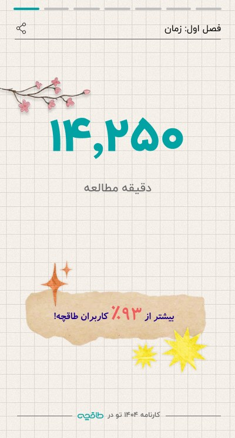
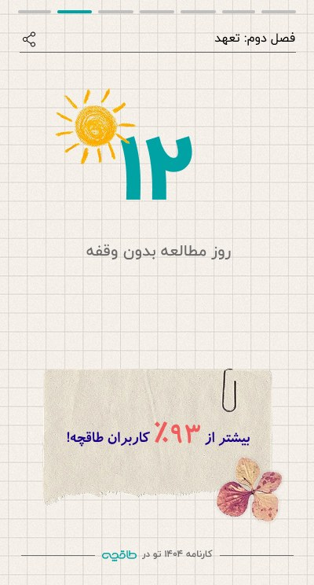
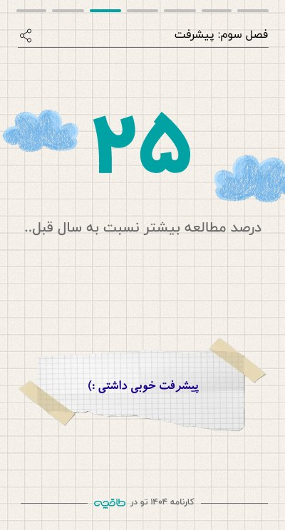
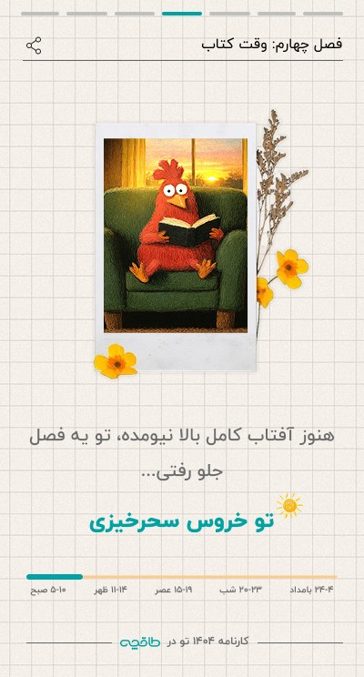
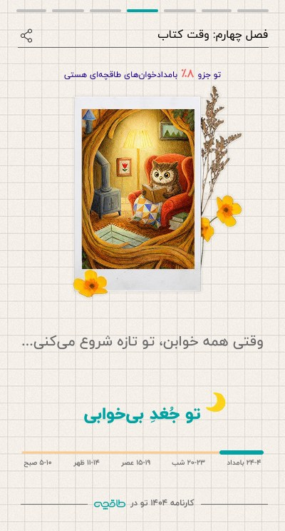
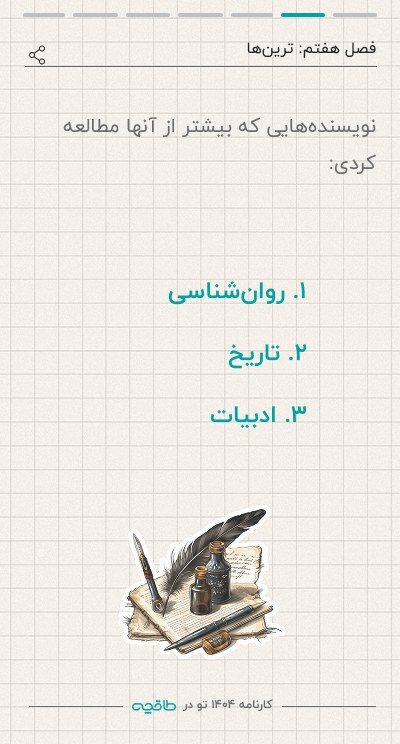
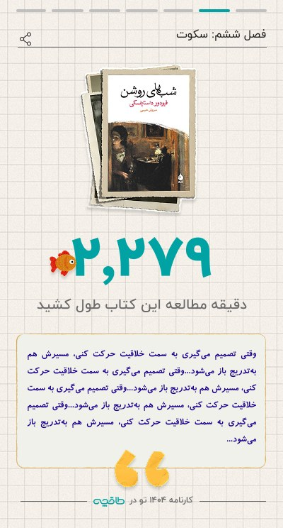
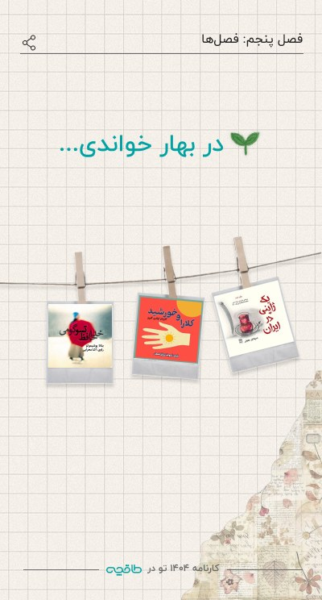
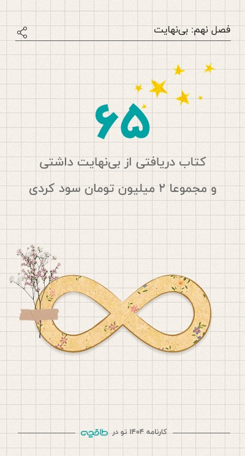

Year in Reading Wrap-up
At the new year, every reader got a personal, story-style recap of their reading. It showed how much they read, when they read, what they loved, and how they compared with other Taaghche readers. The recap was built to be shared.
Designing with the data, not just on top of it
A recap is only as good as the data behind it. I worked closely with the backend developers to find out which statistics we could calculate reliably. One example was how precisely we could rank each reader against their peers, as in “more than 93% of Taaghche users”. The story was then shaped around what was technically achievable.
Ten chapters, one story
- Time: minutes read · Commitment: longest reading streak
- Progress: change from last year · Book time: your reading persona
- Voices: audiobook minutes · Silence: your longest book
- Favorites: top authors, narrators, publishers · Seasons
- Unlimited: subscription value · Sustainability: paper and CO₂ saved
A scrapbook of the year
Grid paper, tape, polaroids and pressed flowers turn statistics into something that feels personal and collectible. Big numbers lead every slide. A chapter label and progress bars at the top tell readers where they are in the story.




What kind of reader are you?
Each reader gets a persona based on the time of day they read most: early-bird rooster, sunny afternoon cat, calm night panda, night owl and more. A time-of-day scale under each card shows why they got that result.




Layouts that survive real data
Real users produce very different numbers. I designed and tested variants for values from four to six digits, for one to three books per season, and for an empty season. Every reader's version holds together, not only the ideal one.




Interface in Persian, read right to left · captions translated
The wrap-up turned a year of reading data into a personal, shareable story for each reader. Because feasibility was agreed with the backend team before the visuals were polished, every statistic in the design could actually be calculated.
- 10story chapters, each with its own share action
- 4–6digit values tested in every number layout
- 0–3books per season covered, including the empty season
What I’d measure: how many readers reach the last slide, the share rate for each slide, and new visits that come from shared stories.


Like what you see?
I’m open to UI/UX designer roles in the Netherlands, and happy to walk you through this project.